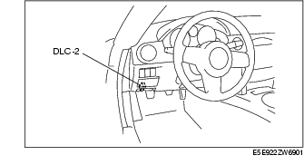

Workshop Manual ➭ BODY & ACCESSORIES ➭ INSTRUMENTATION/DRIVER INFO. ➭ INSTRUMENT CLUSTER INSPECTION
INSTRUMENT CLUSTER INSPECTION
id092200496400
Speedometer
Using the input/output check mode
- Inspect the speedometer by setting it to check code 12 of the input/output check mode. (See INSTRUMENT CLUSTER INPUT/OUTPUT CHECK MODE.)
Using a speedometer tester
• If the speedometer does not move or the indication is not within the allowable range, inspect the PCM and the related wiring harnesses.
Tachometer
Using the input/output check mode
- Inspect the tachometer by setting it to check code 13 of the input/output check mode. (See INSTRUMENT CLUSTER INPUT/OUTPUT CHECK MODE.)
Using M-MDS or external diagnostic equipment
• If the engine speed exceeds the allowable range, the engine could be damaged. Therefore, when inspecting the tachometer, do not allow the engine speed to exceed the allowable range indication on the tachometer.

• When using the IDS (laptop PC)
• When using the PDS (Pocket PC)
• If the tachometer does not operate properly, inspect the PCM and the related wiring harnesses.
Fuel gauge
- Inspect the fuel gauge by setting it to check code 23 of the input/output check mode. (See INSTRUMENT CLUSTER INPUT/OUTPUT CHECK MODE.)
Water temperature gauge
- Inspect the water temperature gauge by setting it to check code 25 of the input/output check mode. (See INSTRUMENT CLUSTER INPUT/OUTPUT CHECK MODE.)
Oil Pressure gauge
- Inspect the oil pressure gauge by setting it to check code 28 of the input/output check mode. (See INSTRUMENT CLUSTER INPUT/OUTPUT CHECK MODE.)